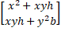
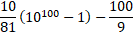
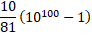
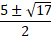

1
390
336
480
360
1.962m s-2
1.762m s-2
1.862m s-2
1.662m s-2
1, -2
-1, 2
1, 2
-1, -2
1.0 cm
1.5 cm
2.0 cm
0.5 cm
135 °
90 °
120 °
150 °
4 fans and 3 lights
3 fans and 4 lights
3 fans and 5 lights
4 fans and 4 lights
ইলেক্ট্রন
প্রোটন
ধনাত্বক নিয়ন আয়ন
ঋণাত্বক নিয়ন আয়ন
7.2 cm, 28.8 cm
5 cm, 20 cm
45 cm, 180 cm
27 cm, 108 cm
40W lamp
60W lamp
দুইটি উজ্জ্বল্য সমান
সাপ্লাইয়ের ভোল্টেজের উপর নির্ভর করবে
1.3s
2.5s
8.0s
8.0min
6A
9A
12A
15A
7.0 × 10-3 Wb
7.4 × 10-4 Wb
3.5 × 10-4 Wb
0Wb
একটি চির →E ক্ষেত্রের জন্য এবং অপরটি →B ক্ষেত্রের জন্য
পথের দূরত্বের পার্থক্য সৃষ্টির জন্য
তীব্রতা বাড়ানো
একটি চির কম্পাঙ্কের জন্য এবং অপরটি তরঙ্গ দৈর্ঘ্যের জন্য
2 A
1 A
1.5 A
1.68 A
দুইটি সদৃশ বিপরীত দিকে অগ্রসরমান তরঙ্গের সাহায্যে গঠন করা যায়
অবশ্যই আড়তরঙ্গ
অবশ্যই দীঘল তরঙ্গ
অর্ধ তরঙ্গের চেয়ে কম দূরত্বে নিস্পন্দ
শীতল বাতাস
শীতল পানি
বরফ
সবগুলো
6.0 ×107
3.3 ×106
1.5 × 1011 J
3.0 × 109 J
0.25
0.50
2.0
4.0
40 ° C
25° C
30° C
35 ° C
1%
2%
0.2%
5%
200
100sin(50t)
100cos(50t)
100
M R2
M/R
M/R2
R2/M
ভর 3M এবং বেগ 2V
ভর 2M এবং বেগ 3V
ভর M এবং বেগ 4V
ভর 3M এবং বেগ V
1.25 × 1026 N
2.17 × 10-47 N
8.32 × 10-8 N
3.81 × 10-6 N
0.25
0.125
0.50
4.0
9800 N
1800 N
11800 N
0 N
8.0m s-1
4.0m s-1
2.0m s-1
0.5m s-1
9.8m s-2
সীসার বলের কম
সীসার বলের সমান
সীসার বলের চেয়ে বেশী
একই
দুইগুণ
তিনগুণ
চারগুণ
7.30s
5.30s
1.30s
0.75s
1/e
-e
e
- 1/e
47.25 kg
5.4 kg
61 kg
63 kg
0
1
2
2 In x
2y In x
2lnx/x
y/x (2 In x)


-1, 0, 1
2, 3, 4
-3, 2, 3
, 3, 4
7!/2
8!/2
7!
8!
3
2

- 7/2
- 1/56
- 8/7
- 1/14
-3, -2
-3, 2
3, -2
3, 2
3
2
1
0
5
25
15
0
0.93
0.75
0.91
0.50
5/16
16/5
4/5
5/4
-6
6
5
0
2 √2 : 4
2 √2 : 3
3 √2 : 2
2 : 3√3
3.5 minutes
1 minutes
2 minutes
3 minutes
3√2
2
2 √2
2 √3
17/6√5
17/5√3
17/3√5
√3/5
180 বার
200 বার
100 বার
50 বার
গোলক M নিরপেক্ষ চার্জ চার্জিত এবং গোলক N ধনাত্বক চার্জে চার্জিত
উভয় গোলক ধনাত্বক চার্জে চার্জিত
গোলক M ধনাত্বক চার্জে চার্জিত এবং গোলক N ঋণাত্বক চার্জে চার্জিত
গোলক M ধনাত্বক চার্জে চার্জিত এবং গোলক N চার্জ নিরপেক্ষ
±1/√3, ± 1
±1/√2 ± 1
± 1
±1/√3
35√2/10
30/10√2
35/10√2
30√2/10
2y2
nbsp; 2y
0
y
18.25
10.50
20.25
9.50
11
24
12
33
2
1
-1
12
15
-5
17
-7
4 N
6 N
2.5 N
1.6 N
nπ/4
nπ/12
nπ/3
nπ/5
30 °
60 °
45 °
90 °
A
B
C
D
Benzidine
Glycine
Adenine
Histidine
CHCl
CHC
CHClO
Cl CH2O
entertained
praised
playful
vindicated
so did their children
also the child
neither did the children
so do their children
with swiftness
rapidly
fastly
in rapid ways
As many as
As many
As much as
Much as
D
C
A
B
NH4CI(s)⇌NH3(g)+HCI(g)
NH4CI(aq)⇌NH4+(aq)+CI-(aq)
C12H22O11(s)⇌C12H22O11(aq)
CaCO3(s)⇌Ca2+(g)+CO32-(g)
234 and 92
238 and 90
238 and 92
234 and 90
স্থিতিশক্তি
গতিশক্তি
অভ্যন্তরীণ শক্তি
মোট শক্তি
যুক্ত অবস্থার সমান
তাপমাত্রার উপর নির্ভর করে যে কোনটিই হতে পারে
যুক্ত অবস্থার চেয়ে কম
যুক্ত অবস্থার চেয়ে বেশি
প্রতিস্থাপন বিক্রিয়া
জারণ-বিজারণ বিক্রিয়া
জারণ বিক্রিয়া
বিজারণ বিক্রিয়া
H2
He
Nitrogen
কোনটিই নয়
0.015 s-1
0.02 s-1
0.015 min-1
0.105 min-1
বেনজিন
বিশুদ্ধ পানি
কোমল পানীয়
ইথাইল অ্যালকোহল
SO2
CO2
NH3
O2
কক্ষ তাপমাত্রা
স্ফুটনাংক তাপমাত্রা
হিমাংক তাপমাত্রা
যে কোন তাপমাত্রা
HCN
HCHO
HCHO + RMgX
NaNO2 + HX
চিত্র
চিত্র
চিত্র
চিত্র
HCHO
RCHO
চিত্র
CH3MgBr
বাষ্পীভবন
উর্দ্ধপাতন
গলন
ঘনীভবন
HCL
Hot H2O
HNO3
H2SO4
1- 100 nm
0.59× 10-8 cm
0.1 A
~ 10-9 m
1
2
3
4
চিত্র
চিত্র
চিত্র
চিত্র
- CO2H
-C ≡ N
- NO2
- C6H5
Mangnesium
Sodium
Sulphur
Phosphorous
ভ্যান ডার ওয়ালস্ আকর্ষণ
হাইড্রোজেন বন্ধন
সমযোজী বন্ধন
দ্বিপল আকর্ষণ
NO2 < NO2- < NO2+
NO2- < NO2- < NO2+
NO2- < NO2- < NO2
N22+ < NO2 < NO2-
অনুগুলোর প্রকৃত আয়তন
B ও C উভয়
আন্তঃআণবিক বিকর্ষণ
আন্তঃআণবিক আকর্ষণ
B ও C উভয়
ফ্যারাডে ইফেক্ট
টিনডাল ইফেক্ট
ব্রাউনিয়ান ইফেক্ট
IA, IIA, IIIA, IVA
IIA, IIA, IVA, VA
IIIA, IVA, VA, VIA
IIA, IVA, VA, VIIA
এসিটিক এসিডের 5% জলীয দ্রবণ
ফরমিক এসিডের 5% জলীয দ্রবণ
এসিটিক এসিডের 1% জলীয দ্রবণ
ফরমিক এসিডের 1% জলীয দ্রবণ
তাদের সমান সংখ্যক ইলেকট্রন ও নিউট্রন রয়েছে
তাদের সমান সংখ্যক নিউট্রন ও প্রোটন রয়েছে
তাদের সমান সংখ্যক ইলেকট্রন ও প্রোটন রয়েছে
তাদের সমান সংখ্যক, প্রোটন, নিউট্রন ও ইলেকট্রন রয়েছে
Cr2O22-+2OH→2Cr2O42-+H2O
H2O2+KOH→KHNO2+H2O
K+O2→KO2
Ca(HCO3)2→CaCO3+CO2+H2O
0
2
3
1
Is22s22p63s23p64s22
Is22s22p63s24s23d2
Is22s22p63s23p6
None of the above
B2O3
Li O2
Si O2
Al2O2
আয়নীকরন শক্তি
ইলেকট্রন আসক্তি
ইলেক্ট্রনেগেটিভিটি
আয়নীকরন বিভব
সমবর্তন
প্রতিসরণ
ব্যতিচার
প্রতিফলন
চুম্বক দিয়ে ক্ষীণভাবে বিকর্ষিত হয়
চুম্বক দিয়ে ক্ষীণভাবে আকর্ষিত হয়
চুম্বক দিয়ে প্রবলভাবে আকর্ষিত হয়
চুম্বক দিয়ে প্রবলভাবে বিকর্ষিত হয়
এটির কোন চার্জ নেই
এটি চৌম্বকক্ষেত্র দিয়ে বিচ্যুত হয়, না
এটি তড়িৎক্ষেত্র দিয়ে বিচ্যুত হয়, না
এটি একটি বিন্দুতে একিভূত করা যায়
অতি বেগুনী রশ্মি
রাডার
মাইক্রোওয়েভ
অবলোহিত রশ্মি
পজিট্রন
এন্টি প্রোটন
প্রোটন
নিউট্রন
E/C
EC
E C2
√
ইহার বিদুৎ পরিবাহীতা মেপে
হল-ইফেক্ট পরীক্ষার সাহায্যে
ইহার তাপর ধারকত্ব মেপে
ইহার রোধের সহগ মেপে
বেগুনী
নীল
সবুজ
লাল
D
A
B
C
D
C
B
A
Question 115, 116, 117 and 118 are based on the following reading.
Although speech is the most advanced form of communication, there are many ways of communicating without using speech. Signals, signs, symbols, and gestures may be found in every known culture. The basic function of a signal is to impinge upon the environment in such a way that it attracts attention, as, for example, the dots and dashes of a telegraph circuit. Symbols are more difficult to disciple than either signals or signs because of their intricate relationship with the receiver's cultural perceptions. In some cultures, applauding in a theatre provides performers with an auditory symbol of approval. Gestures such as waiving and had shaking also communicate certain cultural messages.It is necessary for communication to occur
It is the most advanced from of communication
It is dependent upon the advances made by investors
It is the only form of communication
The most difficult form of communication to describe.
A form of communication which may be used across long distances.
A form of communication that interrupts the environment.
The form of communication most related to cultural perceptions
inefficient
complicated
historical
uncertain
a signal
a sign
a symbol
a gesture